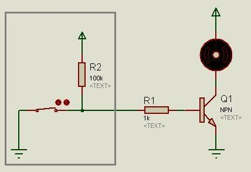
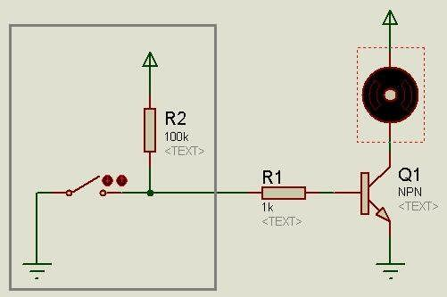
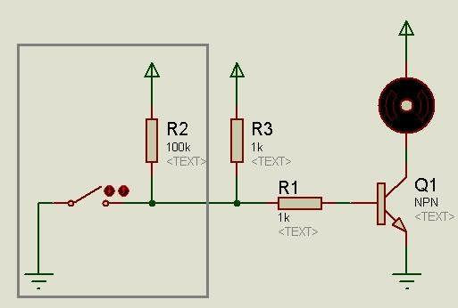
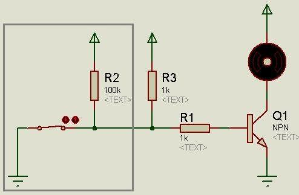
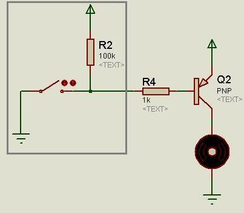
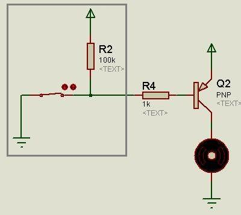
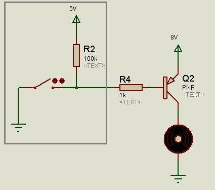
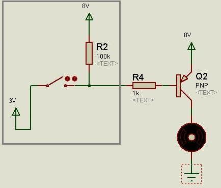
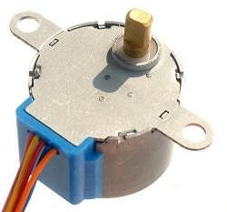

这几天又仔细研究了一下步进电机，大有收获。其实倒不是步进电机本身，而是三极管开关电路方面的收获。
==============阶段一：准三态IO口驱动NPN三极管的问题============
在用51单片机驱动电机的案例中，基本都是使用ULN2003或ULN2803驱动芯片。正如《ULN2803芯片的使用》一文中提到的，这个芯片需要接上拉电阻才能使用。因为ULN2803本质上就是8个NPN三极管，当单片机输出0时，某个引脚地等效电路如图：

图中灰色方框内表示的是单片机内部。引脚有个弱上拉，但是因为输出0，内部接地，所以输出的是低电平，于是NPN三极管截止（断路），所以没有电流流过电机。而当单片机输出1时，其等效电路如图：

图中灰色方框内表示的是单片机内部。在引脚弱上拉作用下，引脚输出高电平，于是三极管导通，电流流过电机。但是，因为上拉能力弱，也就是说上拉电阻阻值很大，所以流过NPN三极管基极的电流非常小，即使经过三极管放大以后，电流还是很小，不足以驱动电机。因此，需要在单片机引脚上外接一个阻值较小的上拉电阻，比如1K的电阻，如图：

这样，当单片机输出0时，引脚输出低电平，NPN三极管截止，电机无电流。而当单片机输出1时，引脚在上拉电阻作用下输出高电平，NPN三极管导通，电机有电流。而且该电流比较强（基极通过2K电阻连接到5V，那么最大提供2.5mA电流，如果放大系数是100倍，那么就能有250mA电流流过电机）。
这就解释了为什么ULN2803需要接上拉电阻。
但是在这个电路中有一个很糟糕的问题——静态电流很大！
所谓静态电流，就是指当单片机命令电机或其他用电器停止时，电路所消耗的电流。在上述ULN2803的使用电路中，当单片机输出0使电机停止时，其电路如图：

那么外接上拉电阻上就会流过5V/1K=5mA的电流，而8个引脚就总共会流出40mA的电流，而单片机自身的功耗才10mA，这对电池供电的设备而言是致命的。
===============阶段二：换用PNP三极管试试？==============
既然问题出在外接的上拉电阻上，那么是否可以去掉外接的上拉电阻呢？根据上述分析，在51单片机这种开漏输出的单片机上，如果要采用NPN三极管，那么只能外接较强的上拉电阻（当然，能够提供推挽输出的高级单片机没有这个问题）。那么是否可以使用PNP三极管呢？
答案是当然可以！改用PNP三极管以后，当引脚输出1时的等效电路如图：

由于内部弱上拉的作用，引脚输出高电平，PNP三极管截止，没有电流通过电机。当单片机输出0时，等效电路如图：

由于PNP三极管基极通过电阻接地，所以导通，有电流通过电机，而且电流较强（基极能够通过最大5V/1K=5mA的电流，假设放大系数有100倍，那么最大可以输出500mA的电流）。
于是可以发现，换用PNP三极管之后，不需要再外接上拉电阻了，节省了硬件成本（当然，NPN结构下，可以去掉限流电阻）。另外，由于没有外接上拉电阻，所以静态电流极小，几乎可以忽略。真是一举两得。
================阶段三：从共GND到共VCC==============
不过换用PNP三极管之后就会面临一个新的问题：通常有电机或其他大功率用电器的系统中，用电器会单独供电，而单片机的供电系统与用电器的供电系统通过“共地”的方式来保证地线电势相等以进行通信。如果用电器电源电压明显高于单片机电源电压，那么PNP三极管电路会“漏电”，消耗较多电流。
这是为什么呢？
我们假设单片机系统使用5V电压供电，而电机部分使用8V电压供电，构成这么一个共地系统：

PNP三极管发射极电压为8V，而基极电压为5V，明显低于发射极电压，于是PNP三极管就会导通，电机就有电流通过。发射极到基极的电流最大为(8V-5V)/100K=0.03mA，假设PNP三极管放大倍数是100倍，那么就会有3mA的电流流过电机。如果单片机内部上拉电阻再小一些，那么“漏电”电流也会大一些。这个“漏电”电流不仅增加了功耗，而且会导致用电器部分发生不可预知的后果。
解决的办法就是把单片机供电系统与用电器供电系统“共VCC”。改进后的电路如图：

也就是说，单片机的VCC接8V的电位，而单片机的GND接3V的电位。这样，当单片机输出1时，PNP三极管基极电压就是8V，不会有“漏电”；当单片机输出0时，PNP三极管基极电压就是3V，导通。
在真实的电路中，假设单片机使用5V电池供电，而电机使用8V电池供电，那么可以分别把单片机的电路和电机电路搭建完，最后用一根导线把两者的电源正极相连即可。
===============附注：关于5V步进电机的接法=============
另外说明一下，最常用的那种5线4相步进电机28byj48，也就是这种：

网上所有资料都说它是共阳接法，也就是红线接VCC，其余4条线通过开关电路接到GND。如果只能使用共阳接法的话，那么没有办法，只能使用NPN开关电路了，于是需要另外处理外接上拉电阻的静态电流问题。
我经过冷静分析，认为这个电机应该是可以使用共阴接法的，也就是红线接GND，其余四根线通过PNP开关电路接到VCC。实验证明我的想法是正确，共阴接法一样可以让电机正常旋转！于是我的共VCC方法就可以起效了~~~